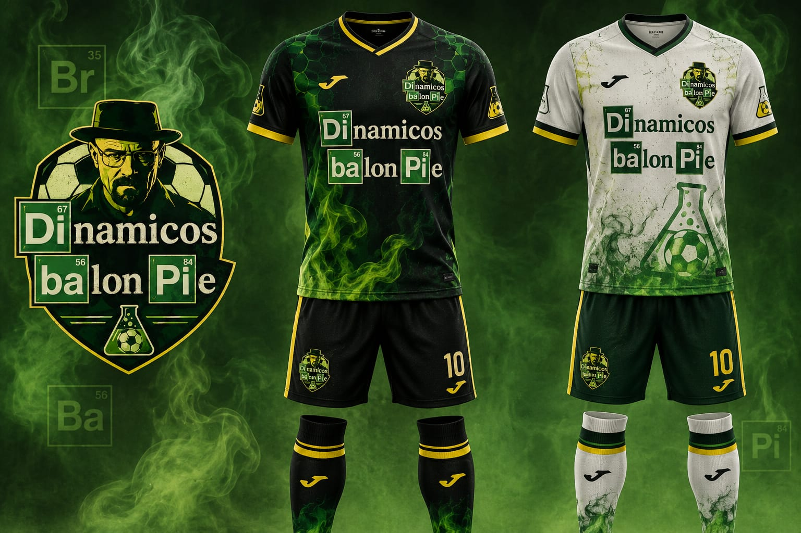

1a Equipacion (Local)
Tiene el color negro y verde oscuro por el humo quimico del escudo, con bordes amarillos para que resalte mas en nuestro campo.
Estas son las dos camisetas oficiales que usamos en los partidos de casa y fuera

Tiene el color negro y verde oscuro por el humo quimico del escudo, con bordes amarillos para que resalte mas en nuestro campo.
Es de color blanco arriba por las batas de laboratorio con el dibujo del matraz en verde abajo para no confundirnos con el rival.